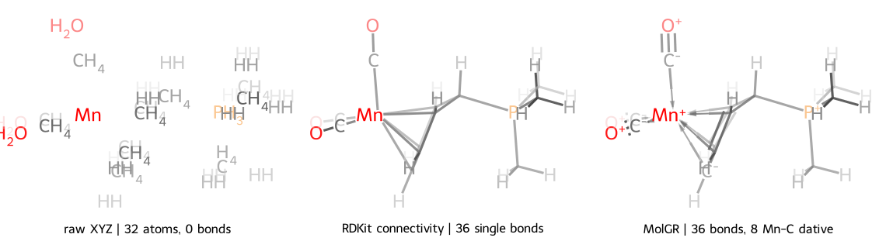

结构恢复¶
从元素、三维坐标、电荷和多重度恢复分子键、键级、形式电荷与自由基状态。
金属配合物示例¶
示例使用一个 Gaussian 16 单点计算：下载 mn_complex_sp.log。
源文件没有分子图；第一次访问 frame.rdmol 时，MolOP 调用 MolGR 恢复拓扑。
from rdkit import Chem
from molop import AutoParser
frame = AutoParser("mn_complex_sp.log", n_jobs=1)[0][-1]
mol = frame.rdmol
if mol is None:
raise RuntimeError("结构恢复失败")
mn = next(atom for atom in mol.GetAtoms() if atom.GetSymbol() == "Mn")
dative_count = sum(bond.GetBondType() == Chem.BondType.DATIVE for bond in mol.GetBonds())
print(frame.formula)
print(f"{mol.GetNumAtoms()} atoms, {mol.GetNumBonds()} bonds")
print(f"Mn charge {mn.GetFormalCharge():+d}, degree {mn.GetDegree()}")
print(f"{dative_count} dative bonds")
print(frame.topology_reconstruction_backend, frame.topology_reconstruction_status)
真实输出与分子图

| 处理方式 | 键数 | Mn 配位 | 结果 |
|---|---|---|---|
| 原始 XYZ | 0 | 无 | 只有元素和坐标 |
RDKit DetermineConnectivity |
36 | 8 条 SINGLE |
只有距离连通性，没有键级语义 |
RDKit DetermineBonds(charge=1) |
- | - | Mn 没有预定义价态，抛出 ValueError |
| MolGR | 36 | 8 条 DATIVE |
同时恢复配体键级、形式电荷与配位键 |
SVG 由同一计算的三种真实分子对象通过 MolOP 默认的 rdkit-dof 绘制器生成。
脚本不手工编辑 SVG 路径。
这个例子的区分点不在“是否连上 36 条键”，而在恢复出的化学语义。RDKit 可以按距离连接原子， 但不能为 Mn 分配价态；MolGR 则把 8 条 Mn-C 键表示为配位键，并完成配体内部的键级与电荷分配。
全局配置恢复策略¶
恢复配置属于进程级 molopconfig，不属于某个 Molecule 实例：
from molop import molopconfig
molopconfig.graph_reconstruction_backend = "python" # 默认值为 "cpp"
molopconfig.reconstruction_failure_policy = "return_suspicious" # 默认值为 "raise"
molopconfig.make_dative_bonds = False # 默认值为 True
molopconfig.make_stereochemistry = False # 默认值为 True
molopconfig.prewarm_topologies = True # 默认值为 False
在第一次访问某个 frame 的 rdmol 之前设置配置。惰性恢复会读取当前全局值，并把实际使用的
设置记录在 frame 上。不同工作流需要不同策略时，应恢复默认值或使用独立进程。
如果无效或无法正常重建的几何结构也必须保留，可将 reconstruction_failure_policy 设为
"return_suspicious"。MolOP 会保留 MolGR 返回的未消毒 fallback RDKit 分子，将
topology_reconstruction_status 记录为 "suspicious_fallback"，并保留失败诊断。默认的
"raise" 策略会把同一情况记录为 failed，且不提供 RDKit 分子。
可选的原生并行预热¶
依赖分子图的操作默认采用惰性重建。MolOP 的进程并行入口使用 spawn-like loky worker，因此
使用分子图的 worker 可以直接生成它，不再需要单独的主进程预热步骤。需要预先填充主进程缓存的
工作流可以设置 molopconfig.prewarm_topologies = True。已有分子图或已经尝试过惰性重建的 frame
会跳过；backend、配位键或立体化学策略不同的 frame 会拆成配置一致的原生批次，保证 provenance 正确。
开启后，以下操作会触发预热：
- 批量
format_transform()使用图级 writer（sdf、smi、cml）； format_transform("gjf", add_gjf_connectivity=True)；- 文件或批量的 frame 级
to_summary_df()； - 轨迹、振动和 TS 振动动画；
- TS 前后体候选推断及其摘要/导出路径保持惰性：这些端点是在任务运行中动态生成的，因此 fresh loky worker 可以沿用正常路径重建临时候选，不再接收主进程生成的候选映射。
filter_custom()和groupby()任意回调。由于回调内容不可静态判断，MolOP 会在向 loky 分发前预热当前输入快照中的全部可重建 frame，即使某个回调实际上只读取元数据。
源证据捕获明确不触碰分子图：附加 source span、hash、parser provenance 和解析诊断时不会读取
frame.rdmol，也不会调用 MolGR。拓扑保持惰性，只有后续的分子图相关操作显式请求时才会重建。
存在可枚举源 frame 集合的任务仅在开启选项时才会先在主进程使用 MolGR 原生 batch 预热，再启动 外层 joblib/loky 进程。TS endpoint 这类运行中动态生成候选的任务保持普通公开调用路径，允许 fresh loky worker 内进行单分子惰性重建。worker 必须由 spawn/loky 创建；fork 子进程会在进入原生 代码前被 MolGR 的 PID 门禁拒绝。
该边界也适用于显式选择的 threading 后端和嵌套并行调用：如果回调在 MolOP 并行任务运行期间
尝试触发未预热的重建，MolOP 会立即抛出并发错误，而不是等待可能自锁的线程池。此类调度错误
不会把分子标记为失败，之后仍可重新预热。
原生门禁同时覆盖 loky 和 joblib 的 multiprocessing 子进程。如果无关的外部 loky executor 仍有未完成任务，门禁会拒绝启动预热；应先耗尽或关闭该结果。只有空闲的可复用进程池会在 MolGR 启动前被回收。
门禁也会拒绝未由 MolOP 管理、但仍存活的 Python 子进程，包括外部的
multiprocessing/loky.ProcessPoolExecutor。必须先等待或关闭这些进程；否则无法证明
MolGR 原生线程池不会与它们重叠。
不要在 MolGR 原生预热后调用 os.fork()，也不要为依赖分子图的任务切换到 fork 型
multiprocessing 后端。此类 fork 会复制原生运行时状态，无法由 Python 门禁完整兜底。
MolOP 管理的进程并行入口会显式选择 joblib 的 loky 后端；loky 使用独立解释器的 spawn-like
启动边界，不会通过 POSIX fork 继承主进程中的 MolGR 原生运行时状态。这里刻意不修改 Python
全局 multiprocessing start method，也不把 joblib 的 legacy multiprocessing 后端包装为标准
spawn，以免破坏 notebook、交互式入口和调用方自己的进程配置。MolOP 入口只会把外层的
joblib legacy multiprocessing 配置归一到 loky；外层 threading 和第三方 backend 不会被覆盖，
调用方直接传给 MolOP 并行 API 的显式 backend 也仍作为兼容覆盖保留。依赖图的任务应保留
loky；源 frame 使用已预热缓存，动态候选则允许在 worker 内单独惰性重建。原生 batch 适配器
仍只在主进程运行，worker 内调用会被拒绝，避免嵌套 MolGR 原生线程池。
原生批量适配器会校验请求身份和完成情况。重复或未知结果会作为批量错误处理；如果迭代器
提前结束，所有未返回的 frame 都会标记为 failed，不会再允许 worker 重新触发原生重建。外层
joblib 迭代器耗尽或关闭后会释放进程池门禁。MolGR 当前没有 Python 层 timeout 或强制中断接口，
因此 native 调用卡死时只能以进程级隔离作为故障边界，MolOP 无法在同一进程内强行中断它。
suspicious_fallback 只保留原生私有分子图作为原始证据，不会从空的普通拓扑字段猜造断开的
分子图。如果该私有缓存在用户自定义序列化过程中丢失，worker 会返回空图并保持失败关闭，
而不是继续生成错误拓扑。
开启选项时，可枚举批量摘要和格式转换沿用操作本身的 n_jobs 作为原生预热上限。纯坐标的
xyz、ORCA input 和 Gaussian 坐标输出仍保持惰性，不会仅因为格式转换而强制重建。
状态含义¶
| 状态 | 含义 |
|---|---|
provided |
源格式已提供键、形式电荷和自由基信息 |
succeeded |
MolGR 从坐标得到正常候选 |
suspicious_fallback |
得到可用候选，但属于需要复核的 fallback |
failed |
未能得到 RDKit 分子，rdmol 为 None |
None |
尚未触发结构访问，或当前对象没有状态 |
MolGR 返回非致命单项失败或可疑 fallback 时，frame.topology_reconstruction_diagnostics
会保留稳定的 code、stage、backend、counts、details 和 cause 字段。该字段是普通字典，
预热后的 frame 序列化到 loky worker 时不会丢失。
为什么结果需要复核¶
仅从几何恢复拓扑不是唯一问题。近距离接触、离子对、自由基、金属配合物和异常几何可能有
多个合理成键方案。suspicious_fallback 不等于无法使用，但不应无检查地进入高可信数据库。
指定电荷和多重度¶
源文件缺少可靠电荷信息时可在解析入口覆盖：
batch = AutoParser(
"radical.xyz",
total_charge=0,
total_multiplicity=2,
)
mol = batch[0][0].rdmol
覆盖值会影响结构恢复，不应只为“让算法成功”而猜测。
导出前检查¶
frame = batch[0][-1]
mol = frame.rdmol
if mol is not None and frame.topology_reconstruction_status != "suspicious_fallback":
print(frame.to_canonical_SMILES())
SDF、SMILES 和 CML 等图级 writer 依赖可用分子图；XYZ 和坐标模式的 Gaussian/ORCA input 可在不保留完整拓扑语义时仍导出坐标。